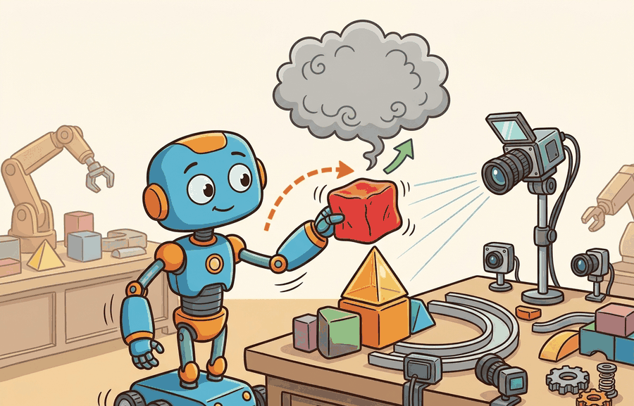

"Sometimes the hard part is not stepping physics. It is making the world look, sense, and scale like the task."
A Sensor-Rich Robot Learner

Isaac Sim is NVIDIA's simulation application built around high-fidelity scenes, rendering, sensors, and the OpenUSD ecosystem. Isaac Lab is the robot-learning framework built on top of Isaac Sim. If MuJoCo is the small sharp tool, Isaac Lab is the heavier workbench for GPU RL, imitation learning, synthetic perception, and sim-to-real studies with rich assets.
Parallel simulation is not only faster. It changes which research questions become practical by making sweeps, ablations, and failure replay cheap enough to run routinely.
This section connects dynamics, rendering, and GPU RL: the simulator choice is valid when perception data, contact dynamics, and training throughput support the same embodied experiment.
From Isaac Gym To Isaac Lab
Isaac Gym was important because it showed how GPU simulation could change reinforcement learning throughput. The current path is Isaac Lab. NVIDIA's migration documentation states that Isaac Gym Preview Release, IsaacGymEnvs, OmniIsaacGymEnvs, and Orbit have been superseded by Isaac Lab workflows. For new projects, the practical rule is direct: start with Isaac Lab unless you are reproducing an older result.
Choose Isaac Sim or Isaac Lab when photorealistic sensors, USD assets, domain randomization, and large-scale robot learning workflows are part of the task contract. Record renderer settings, physics step, sensor latency, and asset provenance.
Do not begin a new robot-learning project on Isaac Gym because an old repository used it. Use Isaac Lab, then document any compatibility constraints if you need to reproduce a legacy baseline.
What Isaac Lab Adds
Isaac Lab is not only a physics engine wrapper. It organizes environments, assets, sensors, controllers, task definitions, vectorized simulation, and learning libraries into a reproducible workflow. This matters for the chapters that follow: benchmarks in Chapter 12, domain randomization in Chapter 13, and massively parallel RL in Chapter 17.
The main engineering benefit is that task structure becomes explicit. A good Isaac Lab experiment separates scene assets, robot articulation, observation groups, action terms, reward terms, termination rules, curriculum events, and randomization events. That separation is why the stack is heavier than MuJoCo, and also why it is useful when one policy must be trained across thousands of sensor-rich variations.
| Term | Role | Use when |
|---|---|---|
| Isaac Sim | Simulation application with rendering, sensors, assets, and USD scenes | You need high-fidelity scenes, synthetic sensors, or robotics simulation infrastructure |
| Isaac Lab | Robot-learning framework built on Isaac Sim | You train, evaluate, or benchmark policies with RL, IL, or motion planning workflows |
| OpenUSD | Scene description and interchange format | You need complex assets, scene composition, and tool interoperability |
| Legacy Isaac Gym | Older GPU RL preview framework | You reproduce older baselines, not when starting new work |
A Task Config Mental Model
Isaac Lab examples usually revolve around task configuration: scene, robot, observations, actions, rewards, terminations, events, and randomization. Code Fragment 1 uses a lightweight dataclass to show this structure without requiring a local Isaac install.
# Isaac Lab task planning skeleton: separate task choices before training.
# Dataclasses make the environment contract explicit and easy to audit.
# Replace this with Isaac Lab config classes in a full project.
from dataclasses import dataclass, asdict
@dataclass(frozen=True)
class TaskContract:
robot: str
observations: tuple[str, ...]
actions: tuple[str, ...]
randomizations: tuple[str, ...]
success_metric: str
def as_row(self) -> dict[str, object]:
return asdict(self)
reach_task = TaskContract(
robot="Franka Panda",
observations=("joint_pos", "joint_vel", "target_pose"),
actions=("joint_position_targets",),
randomizations=("object_mass", "table_friction", "camera_pose"),
success_metric="end_effector_distance < 0.03 m",
)
print(reach_task)TaskContract(robot='Franka Panda', observations=('joint_pos', 'joint_vel', 'target_pose'), actions=('joint_position_targets',), randomizations=('object_mass', 'table_friction', 'camera_pose'), success_metric='end_effector_distance < 0.03 m')The hand-written task contract is about 25 lines and only records intent. Isaac Lab turns the same categories into runnable vectorized environments, integrated sensors, assets, randomization events, and learning-library hooks. The shortcut handles simulation plumbing, while the researcher still owns the task definition and evaluation protocol.
When Isaac Lab Is The Right Default
Choose Isaac Lab when the task needs thousands of GPU environments, rich sensors, USD assets, synthetic data, or a path toward sim-to-real experiments on NVIDIA hardware. It is especially strong for locomotion, manipulation, humanoids, and workflows where rendering and sensor simulation matter alongside dynamics.
Consider a specific case: the Unitree H1 humanoid locomotion task in the Isaac Lab example suite runs 4096 parallel environments on a single A100, stepping physics at 200 Hz per environment. At that scale, a 10-minute training run accumulates roughly 500 million physics steps, an amount that would take weeks on a single-threaded CPU simulator. The same task in MuJoCo on CPU (single environment, 200 Hz) would take about 2,800 hours to collect equivalent data. That gap is why the tool choice is not about personal preference: when a task requires curriculum learning over varied terrain heights, masses, and friction coefficients simultaneously, the throughput difference determines whether the experiment is feasible at all.
Do not treat the stack as one opaque score. Validate dynamics, observations, and training throughput separately. A policy that learns quickly from privileged state may still fail when camera latency, depth noise, lighting, or segmentation labels enter the observation loop.
Isaac Lab's default observation pipeline can silently expose privileged ground-truth state (exact object pose, contact forces, hidden joint targets) that will not be available on a real robot. A manipulation policy trained on 4096 parallel environments with full state access can reach near-perfect success in simulation while failing on the first real grasp attempt because depth noise, occlusion, and RGB-to-depth calibration error were never in the loop. The fix is to configure separate "proprioceptive" and "camera" observation groups from the start and train with the noisy sensor branch active, not patched in post-hoc.
Choose a lighter tool when you need a small control experiment, quick model inspection, or a minimal reproducible dynamics loop. Heavy tools can hide mistakes if the team cannot inspect the physics contract.
A legged locomotion team might choose Isaac Lab because it needs GPU-parallel terrain randomization, domain randomization, camera or depth observations, and compatibility with RL libraries. The same team might keep a small MuJoCo model for debugging a single gait controller before launching thousands of worlds.
Expected output: An Isaac Lab experiment record should include the task config, asset and USD references, observation groups, action space, reward terms, termination rules, randomization events, sensor settings, number of parallel environments, GPU device, and replayable evaluation seeds.
Isaac Lab earns its complexity when the replay artifact can answer two questions at once: what did the policy do, and what did the simulated sensor actually show it?
Does your experiment require Isaac Lab's asset, sensor, and scaling stack, or are you using it because it sounds more complete? Name the feature that would be missing in MuJoCo before choosing the heavier path.
Take the task contract in Code Fragment 1 and add a second success metric for safety, such as maximum force, joint limit violation, or collision count. Explain why success rate alone is not enough for embodied evaluation.
Isaac Lab is increasingly part of a broader physical AI stack that includes USD scenes, synthetic data, accelerated physics, robot-learning libraries, and foundation-model data pipelines. The open question is how to make these rich environments reproducible enough that evaluation results mean the same thing across labs, especially when perception data, randomization events, and physics settings all change together.
Isaac Lab is the current NVIDIA path for robot learning. Use it when scale, sensors, rendering, and USD assets are part of the experiment, and treat Isaac Gym as legacy unless reproducing old work.
Section 11.5 examines Newton, a newer open physics engine built on Warp and OpenUSD that connects directly to this accelerator and scene-interchange story.
Isaac Lab Project. "Isaac Lab Documentation."
The official Isaac Lab documentation is the starting point for current robot-learning workflows on Isaac Sim. It covers tasks, environments, migration guides, and integrations that matter for this section.
NVIDIA. "Isaac Sim Documentation."
Isaac Sim documentation covers the simulation application, rendering, sensors, assets, and USD workflows. It is most useful when the experiment needs rich scenes rather than only a fast dynamics loop.
Isaac Lab Project. "Migrating From IsaacGymEnvs."
This migration guide explains the relationship between deprecated Isaac Gym workflows and Isaac Lab. Readers maintaining older baselines should use it before porting environments or training scripts.
Alliance for OpenUSD. "OpenUSD Documentation."
OpenUSD is the scene-description foundation behind many rich simulation workflows. It matters here because Isaac Sim and Newton-style workflows increasingly depend on composed, interoperable scenes.
Isaac Sim Team. "Isaac Lab GitHub Repository."
The repository provides source code, examples, issues, and release activity. Practitioners should inspect it to verify current APIs and supported workflows before building long-running experiments.